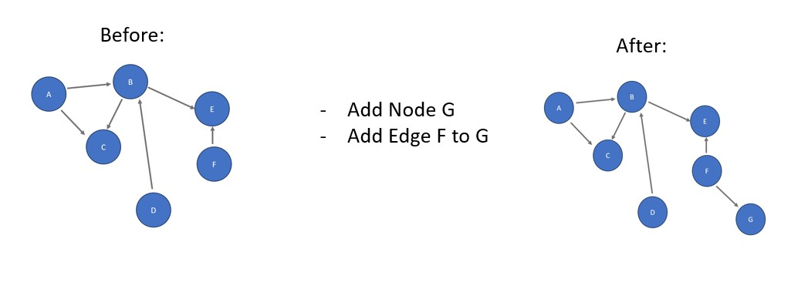
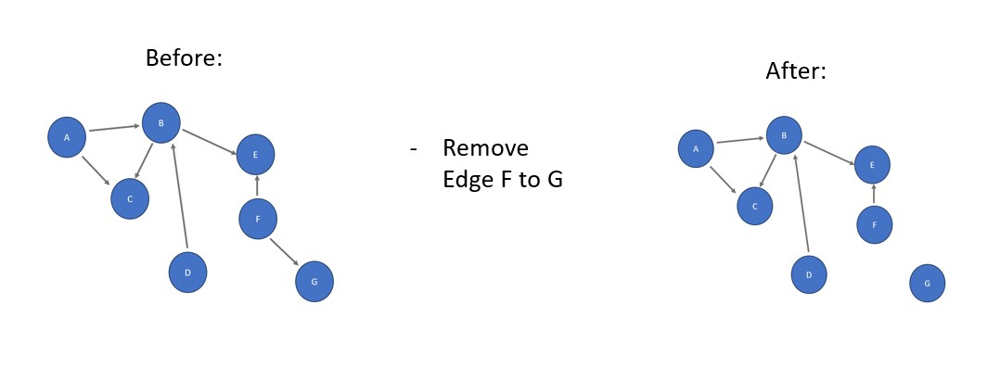
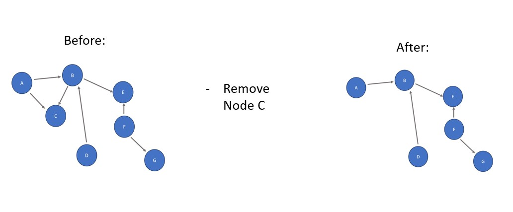

Definition:
A data structure consisting of nodes (data - see blue dots above) connected by edges (links - see grey arrows
above), representing relationships or connections between elements. There are 2 main characteristics of every graph:
Weight: A graph can be categorized as either weighted or unweighted. In a weighted graph, each edge
(link) is assigned a numerical value, such as distance or priority, representing a scalar unit between nodes of
data. On the other hand, an unweighted graph has no assigned weights for its edges.
Direction: A graph is either directed, meaning that every edge points towards a node (think an arrow),
or undirected, meaning that edges don't have direction (think a straight line rather than an arrow).
Real Life
Example:
Think of graphs as street maps, where the locations are nodes and the streets are edges. The locations can only be
accessed via the correct streets!
Basic Graph Operations:
Adding an edge and/or node. Here,
node G is added to the graph and connected to node F via an added edge.

Removing an edge. Since node G has no edges connected to it
after this removal, it is considered isolated. This means that it cannot be accessed until it is reconnected via
adding a new edge.

Removing a node. Notice that any edges connected to/pointing towards the removed
node are removed as well.

Fun Fact: Given all of the
different connections in most graphs, they can be very difficult to display. One of the most common solutions to this issue is implementing an adjacency matrix:
Adjacency Matrix: A 2D array representing connections between nodes
within a graph. If two nodes are connected in a proper direction via an edge, a 1 is placed in the box where the
two nodes meet in the array. If not, a 0 is placed in the box. The nodes listed on the left of the box represent
the starting node and the nodes listed on top of the box represent the ending node. For example, the existence
of an edge pointing from D to B results in the D/B box in the last row containing a 1, but not the B/D box in
the second row. If the graph was undirected instead of directed, a 1 would be placed in both of those boxes.
Note: For weighted graphs, the weight from one node to another is placed in the
box, not a 1.